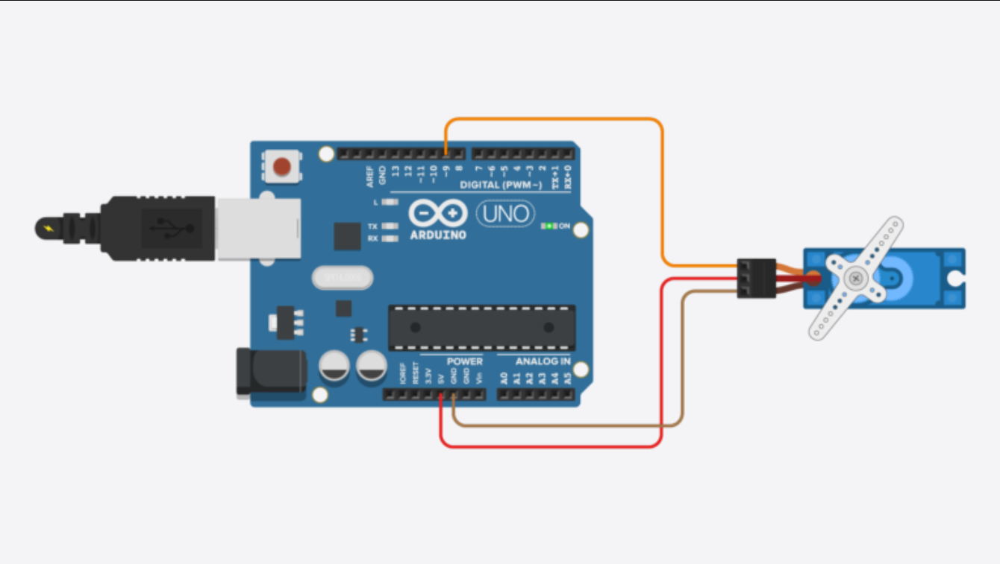

Introduction
Hey there! Ever wondered how robots move their arms or how doors open automatically? That's where servo motors like the SG90 come into play. These compact motors are super versatile and can rotate precisely to specific angles, making them perfect for all kinds of projects. Let's dive into everything you need to know about the SG90 servo motor!
1. What is a Servo Motor?
A servo motor is a type of motor that can rotate to a specific angle with high precision. It uses a control signal to determine the position where it should rotate. Servo motors are commonly used in robotics, remote control systems, and automation.
2. Overview of SG90 Servo Motor
The SG90 is a popular and inexpensive servo motor that's easy to use with microcontrollers like Arduino. It's small in size but packs a punch when it comes to precise movements. Let's explore its features!
Key Features
- Operating Voltage: 4.8V - 6V
- Torque: 1.8 kg/cm
- Speed: 0.12 sec/60°
- Rotation Range: 0° - 180°
3. Pin Configuration
The SG90 servo motor typically has three wires that control its operation. Here’s what each pin does:
Pins Description
- Brown/Black Wire: Connects to ground (GND).
- Red Wire: Connects to the positive voltage supply (VCC).
- Orange/Yellow Wire: Signal wire (control input).
4. How It Works
The SG90 servo motor works based on the principle of pulse-width modulation (PWM). It receives control signals from a microcontroller (like Arduino) to determine its position. Here’s a simple breakdown of how it operates:
Operation Steps
- Control Signal: The microcontroller sends a PWM signal to the servo motor.
- Positioning: The PWM signal determines the angle at which the servo motor shaft should rotate.
- Feedback: The servo motor has built-in feedback mechanisms that adjust its position based on the PWM signal received.
5. Wiring and Connections
Let’s get you connected to the SG90 servo motor. Here’s how you can hook it up to an Arduino:
Components Needed
- SG90 Servo Motor
- Arduino Board
- Connecting Wires
Wiring Diagram
- Connect the Brown/Black wire to the GND pin on the Arduino.
- Connect the Red wire to the 5V pin on the Arduino.
- Connect the Orange/Yellow wire to a PWM-enabled pin on the Arduino (e.g., pin 9).
Example Schematic
Arduino SG90 Servo Motor
-----------------------------
GND -> Brown/Black Wire
5V -> Red Wire
Pin 9 -> Orange/Yellow Wire
6. Example Applications
The SG90 servo motor is incredibly versatile. Here are some exciting applications where you can use it:
Robotics
- Robotic Arms: Control the movement of robot arms.
- Pan-and-Tilt Mechanisms: Precisely adjust the position of cameras.
Automation
- Door Locks: Open and close doors automatically.
- Remote-Controlled Toys: Power movement in toy cars and planes.
7. Code Examples for Arduino
Let's write some code to control the SG90 servo motor with Arduino. Below is a simple example to get you started:
Basic Example to Control SG90 Servo Motor
#include <Servo.h>
Servo myServo; // Create a servo object
void setup() {
myServo.attach(9); // Attach the servo to pin 9
}
void loop() {
myServo.write(0); // Move servo to 0 degrees
delay(1000); // Wait for 1 second
myServo.write(90); // Move servo to 90 degrees
delay(1000); // Wait for 1 second
myServo.write(180); // Move servo to 180 degrees
delay(1000); // Wait for 1 second
}

8. Troubleshooting
Common Issues
- Motor not moving: Check wiring connections and ensure the servo is powered correctly.
- Jittery movements: Ensure the PWM signal is stable and not fluctuating.
- Incorrect angle: Verify the servo library functions and the angle values you're sending.